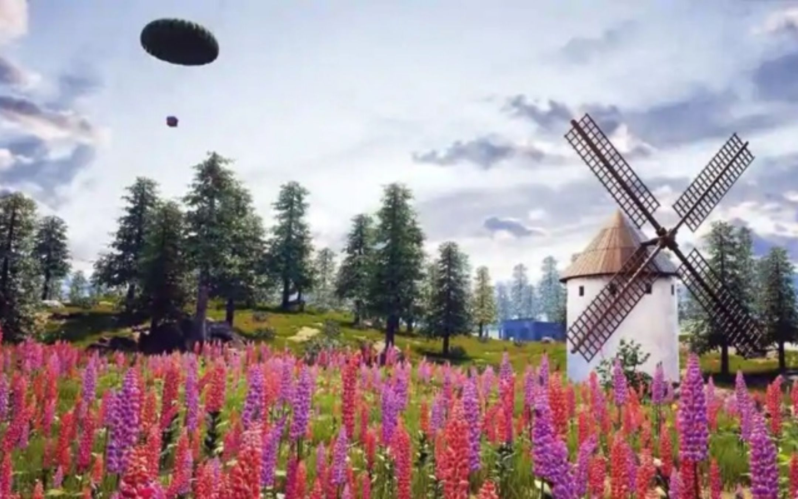
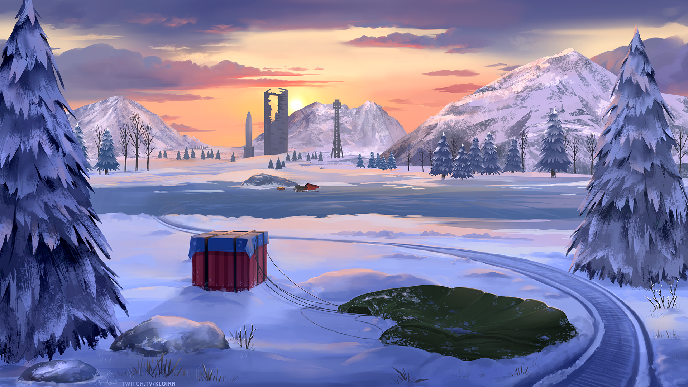
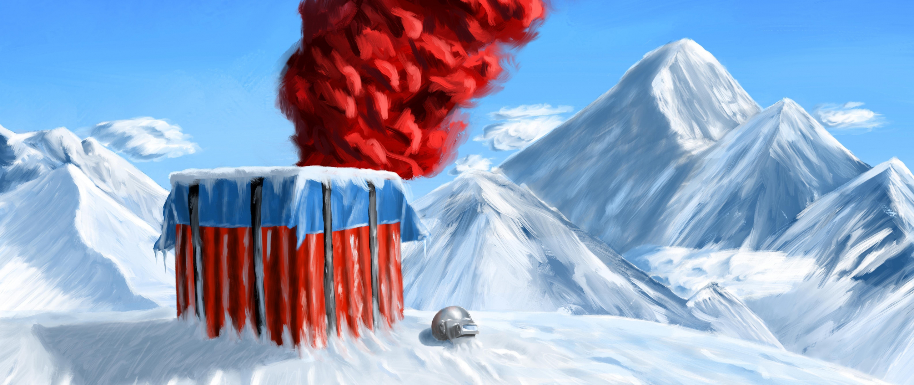
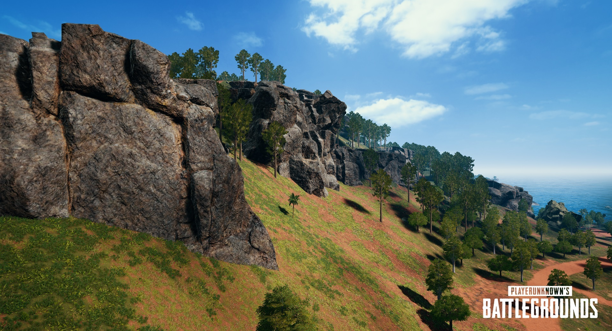
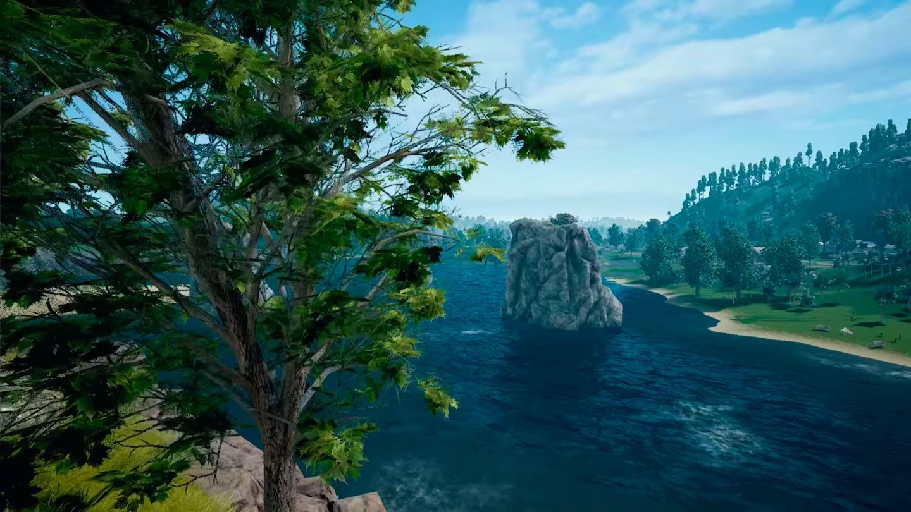
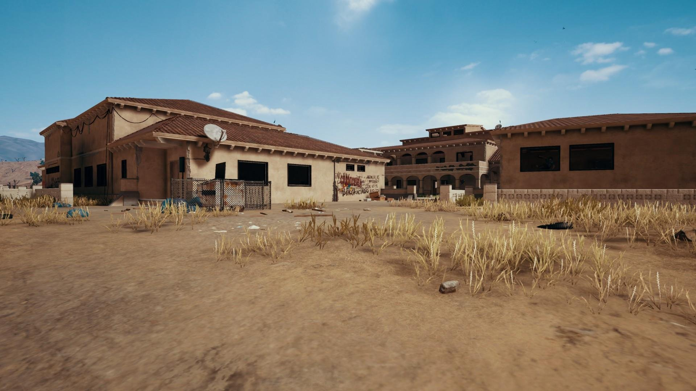
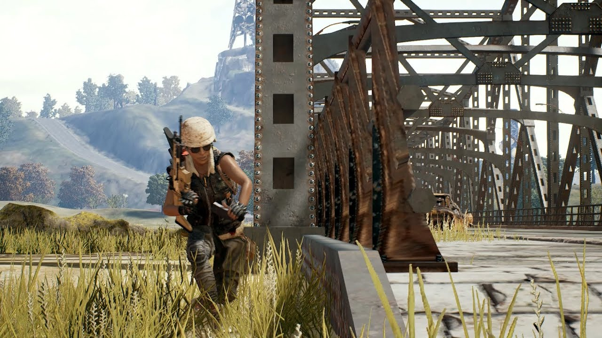
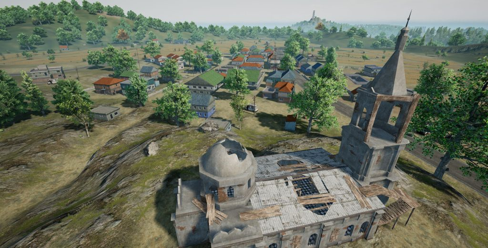

Ливик
Игроки PUBG Mobile теперь имеют доступ к новой карте, созданной специально для людей, которые играют на планшетах и смартфонах. Под названием «Ливик». Команда PUBG впервые разработала карту меньшего размера исключительно для мобильной версии игры. Это приведет к более коротким матчам на меньшем пространстве. Обновление вышло 5 июля.

История Викенди
Викенди (Хорватский: Дихор Оток) (Кодовое имя: Дихороток) является 4-м играбельным Карта это в работе для поля сражений, Викенди-остров 6х6 в Адриатическом море. Разработка этой карты началась где-то в 2017 году, карта была опубликована 10 июня 2018 года в видеоролике
 Санук
Санок — южный тропический остров 4×4 км, затерявшийся в Юго-Восточной Азии; третья игровая карта в PUBG. На острове сосредоточены сельские деревушки с примитивным хозяйством, курорт, военные базы, рыбацкие доки, храм, карьер. Санок (кодовое имя «Savage») стал первой картой, где применен динамический круг. Задача такого круга в том, что синяя зона двигается быстрее или медленнее, в зависимости пропорционально количеству оставшихся в живых игроков. Санок стал первой картой для команды технических и 3D-художников PUBG, когда отдел дизайна физически выезжал в джунгли, чтобы исследовать местность, делать фотографии, зарисовки, концепты новой карты. Они работали над графической составляющей, исследовали местную жизнь, обратили внимание на ветер, воздух, смену погоды и окружающие звуки. Подобный трудозатратный подход дал результат — карта сразу понравилась игрокам, новички и старички приветствовали усилия разработчиков. Санок — микс из двух азиатских слов «веселье» и «курица». Ну понятно. Санок компактный по сравнению с другими картами, оружие на острове сбалансировано по-другому, что лут на карте самого высокого качества — много штурмовых винтовок, снайперок и DMR. На третью карту добавили новые транспортные средства — Тукшаи (тук-туки), Скутеры.
 История Мирамара
Мирамар-это 2 по счету карта в Pubg. Из себя Мирамар это пустыный остров в море. История Мирамара начитается с диолога 2 мафий 1 мафия получила предложение от некого русского чтобы они с 2 мафией продали ему остров 2 мафия глава острова не соглашается 1 мафия говорит "пойду покурю на улице" он выходит на улицу и особняк где находился 2 мафия взлетел на воздух. С верху острова летает самолет того самого русского а в руках у него пешка. {вот так у него появилось 2 поле битвы}

История Эрангеля
Эрангель-это самая первая карта в Pubg. Из себя представляет вымышленный остров в черном море. История острова начинается в 1950-х. История начинается в 1965 году от лица мальчика на острове где он жил началось массовая чистка населения выживает только наш рассказчик русские солдаты зачистили остров потому что жители острова не подчинялись правителю мальчик находит пешку. Пешка становится его синволом. Мальчик покинул остров вырос стал состоятильным мужчиной и выкупил остров купил горы припасов винтовок пистолетов автматов кучи техники и нанял людей а эти люди собрали головорезев киллеров наемников и преступников которым нечего терять. И он устроил там кровавую баню или резню.{Игра называется Play anon battleground то бишь Поле боя неизвесного игрока а неизвестный игрок и есть этот мальчик}
 Pubg Mobile
Pubg Mobile-это мобильная игра в жанре королевской битвы. Она вышла в Бета-тест в 2017 а на просторы плей маркета в 2018. Самые первые карты в игре были Эрангель и Мирамар.